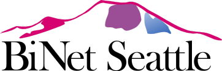

Seattle BiNet Summer Picnic 2014
BiNet Seattle invites you to join the bisexual community for our Fifteenth Annual Picnic.
Saturday, September 6th, 2014, 10am–2pm.
Ravenna Park, Picnic Shelter & Tables 1–3,
5520 Ravenna Ave NE,
Seattle, WA 98105
http://www.seattle.gov/parks/park_detail.asp?id=391
http://maps.google.com/maps?q=5520+Ravenna+Ave+NE,+Seattle,+WA+98105
We'll provide burgers, sausages, vegetarian burgers, and plates. You bring a non-alcoholic beverage and something to share, such as a salad or dessert.
This is a family-friendly event. Bring your kids and your partners and enjoy the sun and the shade.
*** Please RSVP to http://socializr.punchbowl.com/parties/0232a88b161085d6d10b ***
It will help us plan.
Who We Are
BiNet Seattle is a bisexual non-profit, mixed gender, social and support organization created to foster a visible community for bisexual, bi-curious people, and their partners in the Puget Sound area. We support the community through educational speakings, support groups and social events.
For more information about our meetings and socials check out the rest of our website. We have also included Links to other groups and resources that are either bisexual and bi friendly in nature here in the Seattle area as well as have provided links to other bi resources around the USA.
If you have any questions about BiNet Seattle or bisexuality in general, please feel free to Contact Us at BiNet Seattle
Join our Announcements List! Every week or two, we'll send you announcements of our own events as well as other Seattle-area events that may be of interest.
If you want to interact with us online, our Facebook group is where you will find us. You can also follow us on Twitter. We have a LiveJournal BiNetSeattle Community, but it's no longer active.
Buy a BiNet Seattle t-shirt.
Your privacy is respected. Any mailings we do are sent discreetly. Our membership list is kept confidential, and is not sold, lent, given away or shared with any outside party.